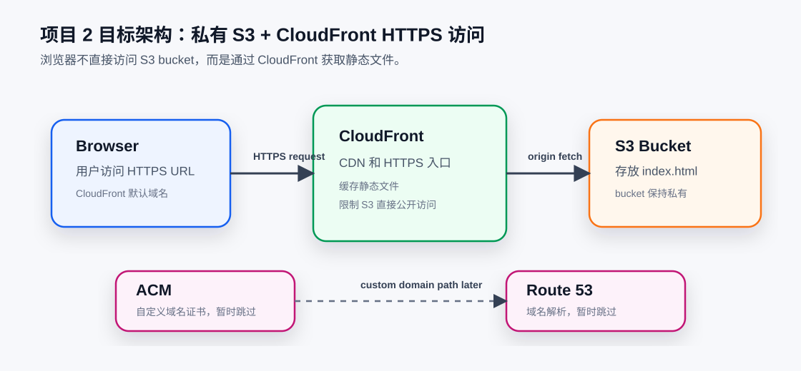

S3 + CloudFront 静态网站
先创建私有 S3 bucket 存放 index.html，
再用 CloudFront 作为 HTTPS 入口。暂时不使用自定义域名。
这个页面会作为后续 AWS 项目的入口，记录每个阶段的目标、验收状态、 架构图和清理步骤。当前项目是静态站点发布：S3 存文件，CloudFront 提供 HTTPS 访问。

先创建私有 S3 bucket 存放 index.html，
再用 CloudFront 作为 HTTPS 入口。暂时不使用自定义域名。
不购买域名，不创建 Route 53 hosted zone。CloudFront、S3 bucket 和测试对象都需要进入清理清单。
Root MFA、IAM Identity Center、预算告警、CloudTrail、AWS CLI SSO。
S3、CloudFront、私有 bucket、HTTPS 默认域名和清理步骤。
Lambda、API Gateway、DynamoDB、IAM role 和 CloudWatch Logs。
S3 event、Lambda trigger、SQS、SNS 和事件驱动处理。
S3、Glue Data Catalog、Athena 和简单 SQL 查询。
EC2、RDS、S3、CloudFront、ECS、CI/CD 和正式切流。
index.html 可以直接打开。aws-learning。